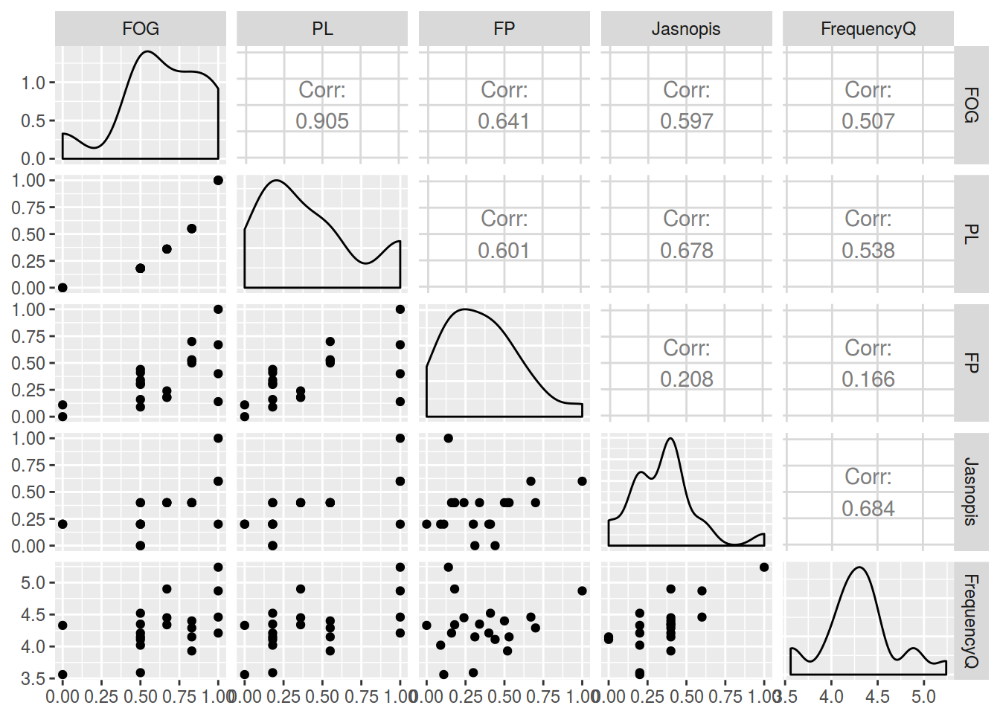

chisq.test(matrix(c(5485, 8318, 15913, 8259), nrow = 2))##
## Pearson's Chi-squared test with Yates' continuity correction
##
## data: matrix(c(5485, 8318, 15913, 8259), nrow = 2)
## X-squared = 2431.2, df = 1, p-value < 2.2e-16ru <- read.csv("http://goo.gl/KljqjU")
table(ru)## case
## prep acc loc
## na 156 96
## w 119 95chisq.test(table(ru))$expected > 5## case
## prep acc loc
## na TRUE TRUE
## w TRUE TRUEchisq.test(table(ru))##
## Pearson's Chi-squared test with Yates' continuity correction
##
## data: table(ru)
## X-squared = 1.6459, df = 1, p-value = 0.1995pl <- read.csv("http://goo.gl/xNozm2")
table(pl)## case
## prep acc loc
## na 11 78
## w 1 15chisq.test(table(pl))$expected > 5## Warning in chisq.test(table(pl)): Chi-squared approximation may be
## incorrect## case
## prep acc loc
## na TRUE TRUE
## w FALSE TRUEfisher.test(table(pl))##
## Fisher's Exact Test for Count Data
##
## data: table(pl)
## p-value = 0.6873
## alternative hypothesis: true odds ratio is not equal to 1
## 95 percent confidence interval:
## 0.2664267 97.0032253
## sample estimates:
## odds ratio
## 2.10313df <- data.frame(
no_adpositions = c(11, 30),
prepositions = c(5, 511),
postpositions = c(59, 576),
no_dominant_order = c(2, 58),
inpositions = c(0, 8))
chisq.test(df)$expected < 5## Warning in chisq.test(df): Chi-squared approximation may be incorrect## no_adpositions prepositions postpositions no_dominant_order
## [1,] TRUE FALSE FALSE TRUE
## [2,] FALSE FALSE FALSE FALSE
## inpositions
## [1,] TRUE
## [2,] FALSE# answer: inpositions, no_adpositions, no_dominant_order
fisher.test(df)##
## Fisher's Exact Test for Count Data
##
## data: df
## p-value = 2.332e-13
## alternative hypothesis: two.sidedlibrary(tidyverse)
df <- read.csv("http://goo.gl/txmyO9", sep = "\t")
df[,-1] %>%
cor() ->
m
m## FOG PL FP Jasnopis FrequencyQ
## FOG 1.0000000 0.9049325 0.6405376 0.5973699 0.5067984
## PL 0.9049325 1.0000000 0.6011638 0.6776606 0.5384389
## FP 0.6405376 0.6011638 1.0000000 0.2080650 0.1656842
## Jasnopis 0.5973699 0.6776606 0.2080650 1.0000000 0.6844838
## FrequencyQ 0.5067984 0.5384389 0.1656842 0.6844838 1.0000000# better View
m %>%
as.table() %>%
as.data.frame() %>%
arrange(desc(Freq))## Var1 Var2 Freq
## 1 FOG FOG 1.0000000
## 2 PL PL 1.0000000
## 3 FP FP 1.0000000
## 4 Jasnopis Jasnopis 1.0000000
## 5 FrequencyQ FrequencyQ 1.0000000
## 6 PL FOG 0.9049325
## 7 FOG PL 0.9049325
## 8 FrequencyQ Jasnopis 0.6844838
## 9 Jasnopis FrequencyQ 0.6844838
## 10 Jasnopis PL 0.6776606
## 11 PL Jasnopis 0.6776606
## 12 FP FOG 0.6405376
## 13 FOG FP 0.6405376
## 14 FP PL 0.6011638
## 15 PL FP 0.6011638
## 16 Jasnopis FOG 0.5973699
## 17 FOG Jasnopis 0.5973699
## 18 FrequencyQ PL 0.5384389
## 19 PL FrequencyQ 0.5384389
## 20 FrequencyQ FOG 0.5067984
## 21 FOG FrequencyQ 0.5067984
## 22 Jasnopis FP 0.2080650
## 23 FP Jasnopis 0.2080650
## 24 FrequencyQ FP 0.1656842
## 25 FP FrequencyQ 0.1656842# "kendall"
df[,-1] %>%
cor(., method = "kendall") %>%
as.table() %>%
as.data.frame() %>%
arrange(desc(Freq))## Var1 Var2 Freq
## 1 FOG FOG 1.0000000
## 2 PL FOG 1.0000000
## 3 FOG PL 1.0000000
## 4 PL PL 1.0000000
## 5 FP FP 1.0000000
## 6 Jasnopis Jasnopis 1.0000000
## 7 FrequencyQ FrequencyQ 1.0000000
## 8 Jasnopis FOG 0.6216365
## 9 Jasnopis PL 0.6216365
## 10 FOG Jasnopis 0.6216365
## 11 PL Jasnopis 0.6216365
## 12 FrequencyQ Jasnopis 0.5171766
## 13 Jasnopis FrequencyQ 0.5171766
## 14 FP FOG 0.4763305
## 15 FP PL 0.4763305
## 16 FOG FP 0.4763305
## 17 PL FP 0.4763305
## 18 FrequencyQ FOG 0.3596708
## 19 FrequencyQ PL 0.3596708
## 20 FOG FrequencyQ 0.3596708
## 21 PL FrequencyQ 0.3596708
## 22 Jasnopis FP 0.2299379
## 23 FP Jasnopis 0.2299379
## 24 FrequencyQ FP 0.1007961
## 25 FP FrequencyQ 0.1007961# "spearman"
df[,-1] %>%
cor(., method = "spearman") %>%
as.table() %>%
as.data.frame() %>%
arrange(desc(Freq))## Var1 Var2 Freq
## 1 FOG FOG 1.0000000
## 2 PL FOG 1.0000000
## 3 FOG PL 1.0000000
## 4 PL PL 1.0000000
## 5 FP FP 1.0000000
## 6 Jasnopis Jasnopis 1.0000000
## 7 FrequencyQ FrequencyQ 1.0000000
## 8 Jasnopis FOG 0.7001796
## 9 Jasnopis PL 0.7001796
## 10 FOG Jasnopis 0.7001796
## 11 PL Jasnopis 0.7001796
## 12 FrequencyQ Jasnopis 0.6305604
## 13 Jasnopis FrequencyQ 0.6305604
## 14 FP FOG 0.5999786
## 15 FP PL 0.5999786
## 16 FOG FP 0.5999786
## 17 PL FP 0.5999786
## 18 FrequencyQ FOG 0.4612179
## 19 FrequencyQ PL 0.4612179
## 20 FOG FrequencyQ 0.4612179
## 21 PL FrequencyQ 0.4612179
## 22 Jasnopis FP 0.2979418
## 23 FP Jasnopis 0.2979418
## 24 FrequencyQ FP 0.1302221
## 25 FP FrequencyQ 0.1302221# install.packages("GGally")
library(GGally)
ggpairs(df[,-1])